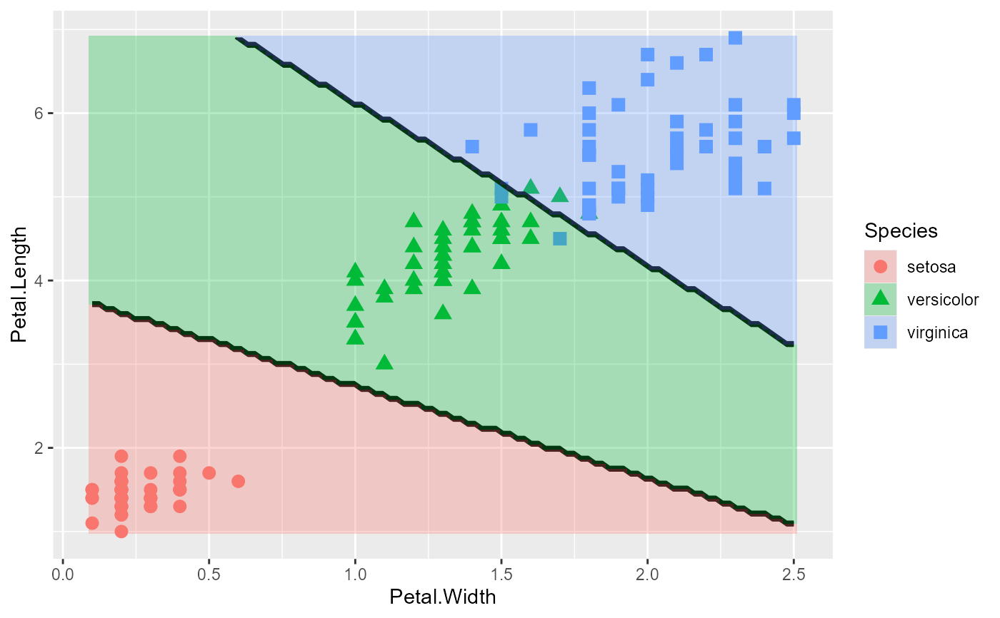

Discriminant analysis can be more easily understood from plots of the data variables showing how observations are classified.
plot_discrim() uses the ideas behind effect plots: Visualize predicted values for two focal variables, with other variables
in a model held fixed.
Usage
plot_discrim(
model,
vars,
data,
resolution = 100,
contour = TRUE,
contour.color = "black",
point.size = 3,
showgrid = c("tile", "point", "none"),
...,
modes.means
)Arguments
- model
a discriminant analysis model object from
MASS::lda()orMASS::qda()- vars
either a character vector of length 2 of the names of variables, or a formula of form V1 ~ V2 specifying y and x axis in the plot respectively.
- data
data to use for visualization. Should contain all the data needed to use the model
- resolution
number of points in x, y variables to use for visualizating the predicted class boundaries and regions.
- contour
logical; should the plot display the boundaries of the classes by contours?
- contour.color
colour of the lines for the contour boundaries
- point.size
size of the plot symbols use to show the data observations
- showgrid
a character string; how to display predicted class regions: "tile" for geom_tile, "point" for geom_point, or "none" for no grid display.
- ...
further parameters passed to
predict()- modes.means
levels to use for evaluating predictions using the variables *not specified in
vars. If not specified, the function uses the means for quantitative variables, ...
Details
In setting up this plot for ggplot(), this function maps color and shape of class-specific elements of the plot to the value of the class variable in the discriminant analysis. But it simply uses the ggplot defaults...
Author
Original code by Oliver on SO https://stackoverflow.com/questions/63782598/quadratic-discriminant-analysis-qda-plot-in-r. Generalized by Michael Friendly
Examples
library(MASS)
library(ggplot2)
library(dplyr)
#>
#> Attaching package: 'dplyr'
#> The following object is masked from 'package:MASS':
#>
#> select
#> The following objects are masked from 'package:stats':
#>
#> filter, lag
#> The following objects are masked from 'package:base':
#>
#> intersect, setdiff, setequal, union
iris.lda <- lda(Species ~ ., iris)
plot_discrim(iris.lda, Petal.Length ~ Petal.Width, data=iris, showgrid = "tile")
